🎓 Scienze del Turismo
La mia laurea e il punto in cui la passione per i viaggi ha incontrato lo studio del turismo.
Amo partire, ma probabilmente amo quasi altrettanto tutto quello che succede prima: cercare, confrontare, costruire itinerari e trovare quel posto che rischiava di rimanere fuori dalla mappa.
Questo è il mio diario: le radici, le esperienze e i luoghi che mi hanno portata fin qui.

Negli anni ho iniziato a costruire autonomamente i miei itinerari, confrontando voli, alloggi, trasporti, esperienze e costi per conoscere davvero ogni destinazione senza trasformare il viaggio in una corsa.
Mi piace vedere i luoghi che tutti conoscono, ma ancora di più scoprire quello che c'è intorno: un quartiere meno turistico, una strada presa quasi per caso, la cucina locale, un paesaggio che non avevo programmato di trovare.
A un certo punto ho capito che preparare ogni partenza era diventato una delle cose che preferivo. Da lì è nato Fuori Mappa: uno spazio in cui raccogliere esperienze reali, itinerari progettati e idee per chi sta preparando il prossimo viaggio.
Sono cresciuta tra la Sicilia e i racconti di un piccolo borgo nelle Marche, Vallecchia. Due luoghi molto diversi, che mi hanno insegnato a guardare oltre le destinazioni più conosciute e ad apprezzare anche gli angoli meno raccontati.
La mia laurea e il punto in cui la passione per i viaggi ha incontrato lo studio del turismo.
Continuo questo percorso con un Master in Turismo Sostenibile, per imparare a progettare viaggi sempre più consapevoli.
I luoghi famosi meritano di essere visti, ma una destinazione non finisce mai nelle sue attrazioni principali.
Partire non deve necessariamente significare spendere una fortuna. Costi e alternative fanno parte dell'itinerario.
Organizzare bene non significa riempire ogni minuto. Preferisco itinerari che lasciano il tempo di vivere un posto.
Alcuni viaggi li ho organizzati da zero, altri li ho scoperti strada facendo. Tutti hanno lasciato qualcosa nel mio modo di vedere il mondo.
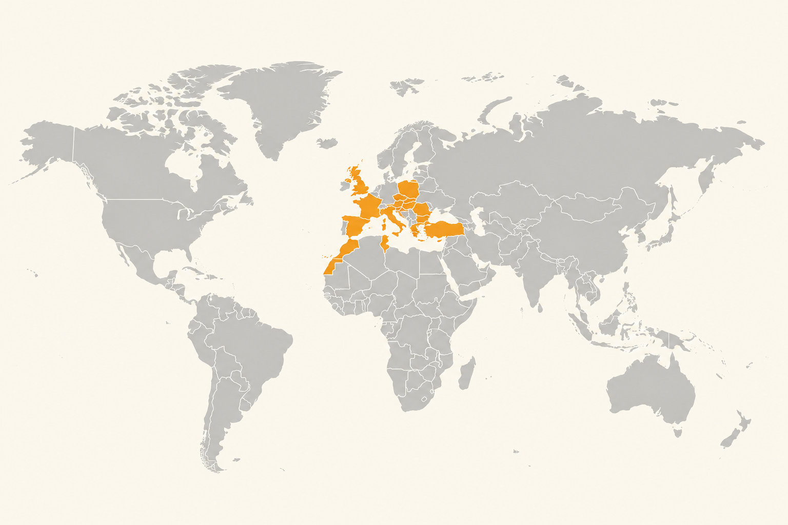
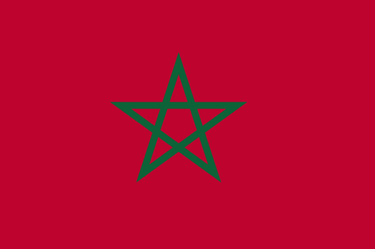
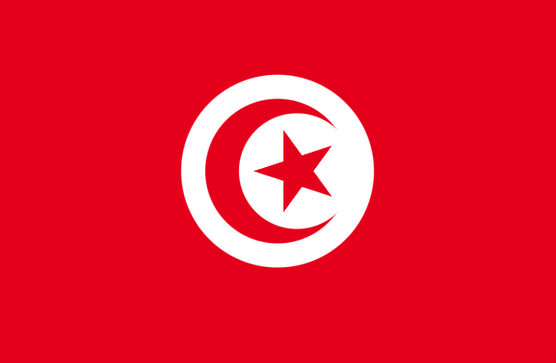
Tunisi
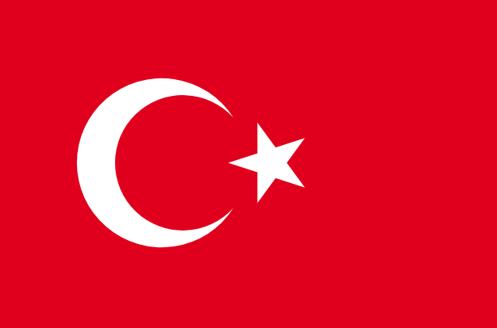
Istanbul
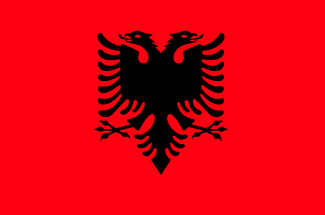
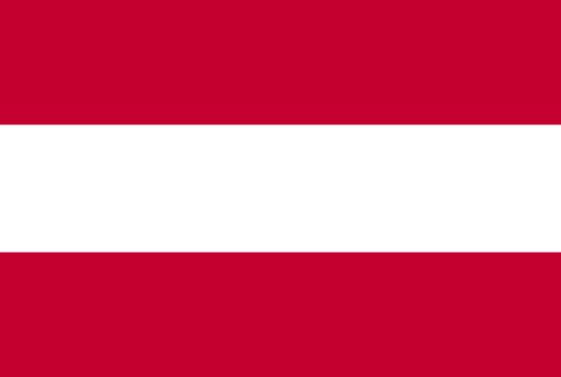
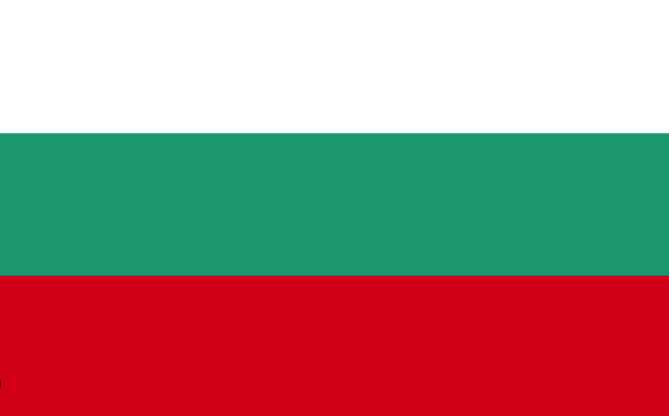
Sofia
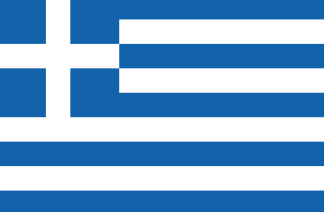
Atene
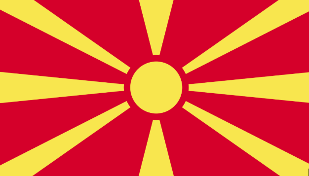
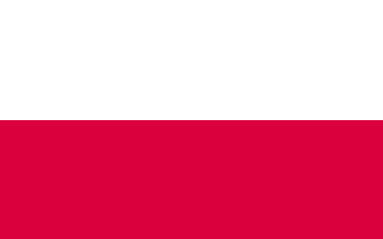
Varsavia
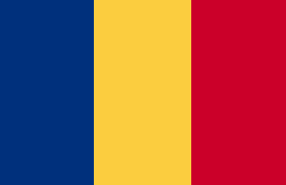
Bucarest
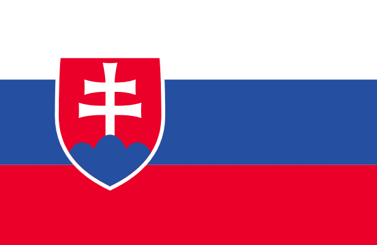
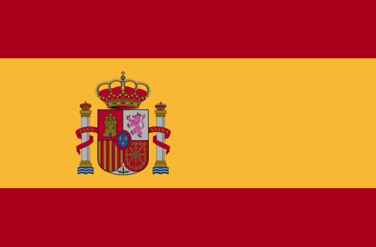
Valencia · Barcellona · Ibiza (Dalt Vila)
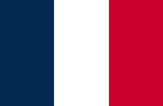
Nizza
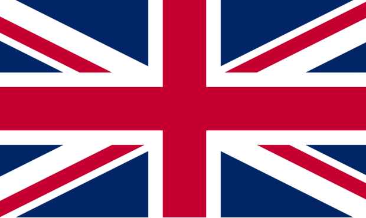
Londra · Bath · Cheltenham · Stonehenge
✦ Per queste destinazioni trovi anche un itinerario sul sito.
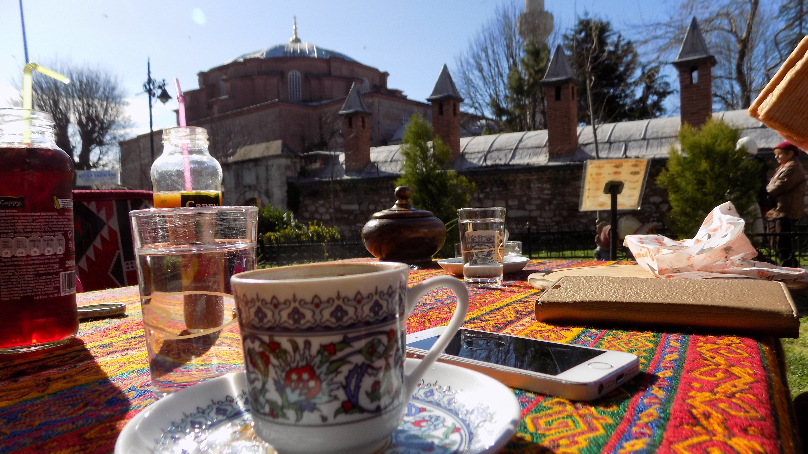
Istanbul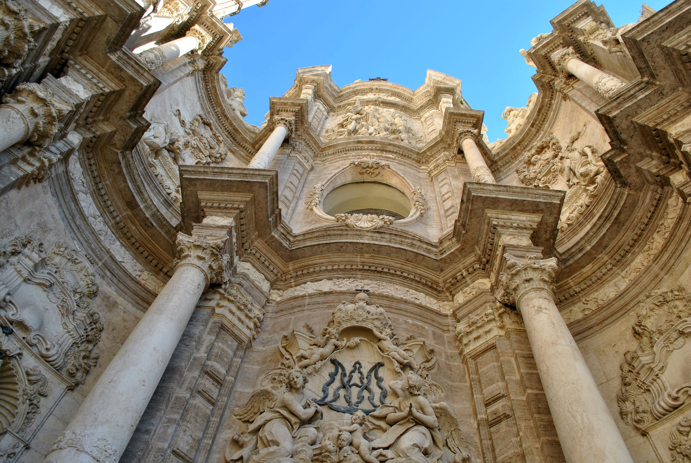
ValenciaLa mia isola, il punto di partenza di ogni viaggio. Tra borghi, mare, montagne e tradizioni, è il luogo che mi ha insegnato ad amare i dettagli, le persone e la libertà di partire, sempre.
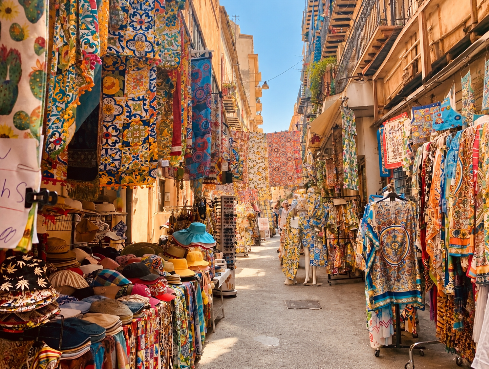
Ogni viaggio, anche il più semplice, ha fatto crescere la mia curiosità. Se hai un luogo in mente, possiamo iniziare a disegnare la tua rotta.
Costruiamo il tuo viaggio →